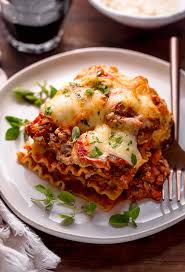

Lasagna Recipe

Description
Lasagna is a classic Italian dish made with layers of pasta, rich meat sauce, creamy béchamel, and melted cheese. Baked to perfection, it offers a delicious blend of savory flavors and textures in every bite. This hearty and comforting meal is perfect for family dinners and special gatherings.
Ingredients
- 12 lasagna noodles
- 1 pound ground beef
- 1 onion, chopped
- 2 cloves garlic, minced
- 1 can (28 oz) crushed tomatoes
- 1 teaspoon dried oregano
- 1 teaspoon dried basil
- Salt and pepper to taste
- 2 cups ricotta cheese
- 1 egg
- 2 cups shredded mozzarella cheese
- ½ cup grated Parmesan cheese
Steps
- Preheat the oven to 375°F (190°C) and cook the lasagna noodles according to package instructions.
- In a large skillet, cook ground beef, onion, and garlic over medium heat until browned. Drain excess fat.
- Add crushed tomatoes, oregano, basil, salt, and pepper. Simmer for 15-20 minutes.
- In a separate bowl, mix ricotta cheese with an egg.
- In a baking dish, spread a layer of meat sauce, followed by noodles, ricotta mixture, and mozzarella cheese. Repeat layers.
- Top with Parmesan cheese and bake for 30-40 minutes until golden and bubbly.
- Let it rest for 10 minutes before slicing and serving. Enjoy!
Home